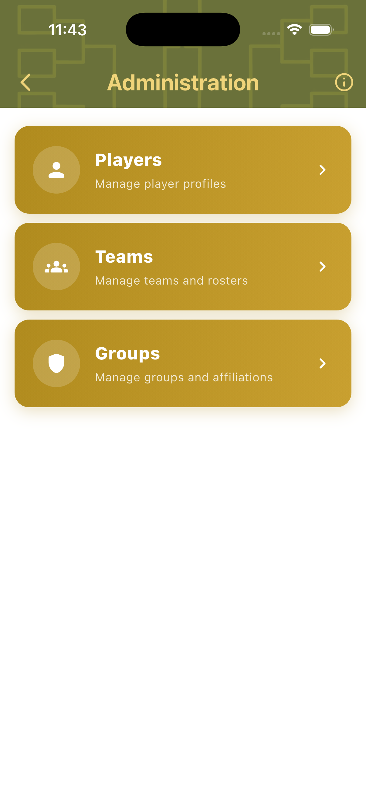
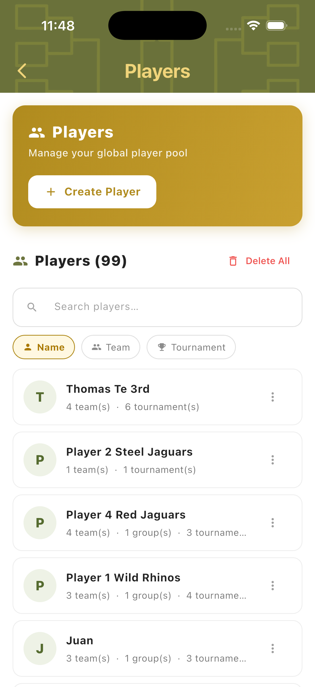
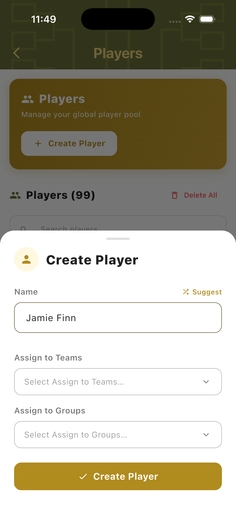
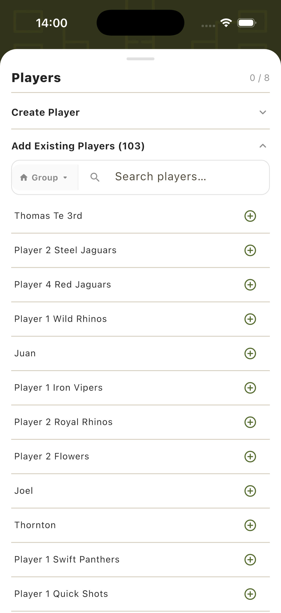
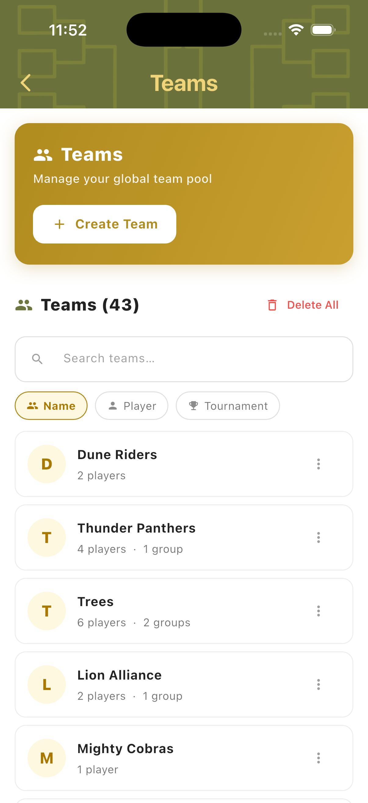
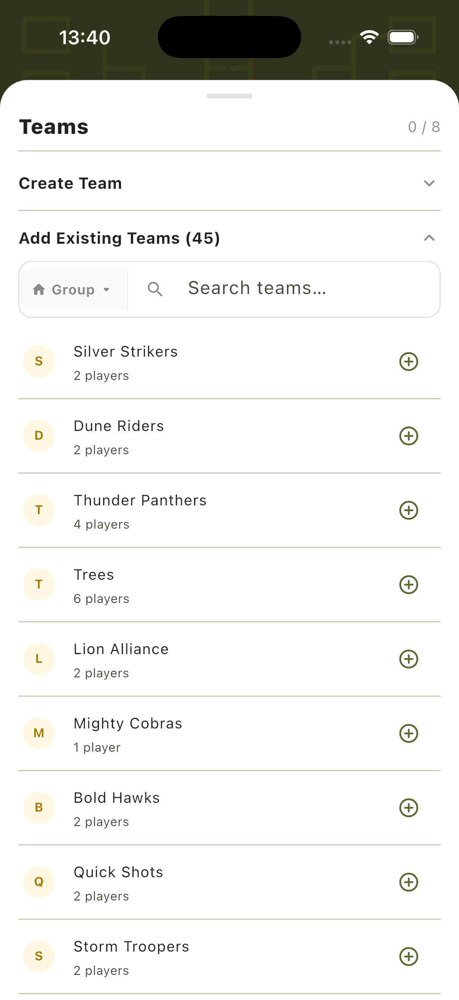
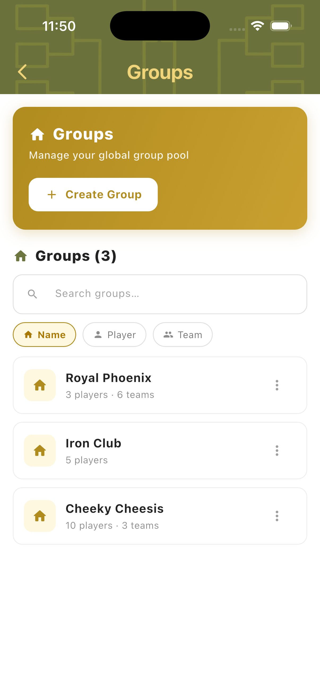
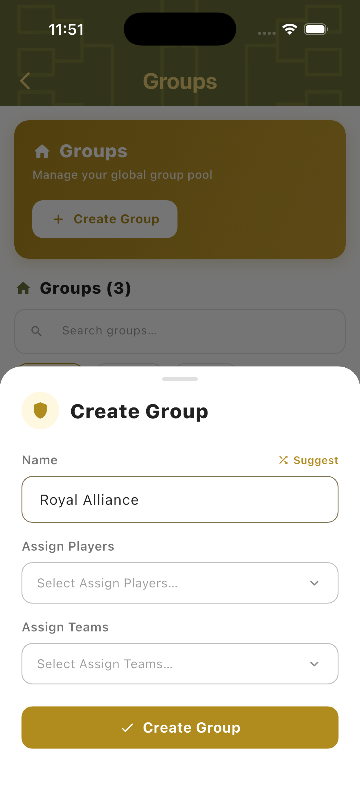

Player & Team Administration
The Administration section is TournaQ's persistent data layer. Players, teams, and groups saved here are available across every mode — Quick Games, Social Scrambles, Doghouse, Single Elimination, and all others. Instead of re-entering names every session, an organiser can build up a library of players and teams once and import them in seconds when setting up a new game or tournament. Groups let you organise players and teams by club, venue, or event series so they can be filtered when adding to a tournament.

Players
The Players hub is a searchable, filterable list of every player saved on the device. Each entry shows the player's name and how many teams, groups, and tournaments they have been part of. Players can be searched by name, filtered by team, or filtered by tournament. New players can be created at any time and are immediately available across all modes.
Players Hub
The Players hub shows the full player count (e.g. 99 players) and a searchable list. Filter tabs let you switch between Name, Team, and Tournament views. Each player entry shows their initial badge, full name, and a summary of how many teams and tournaments they belong to. Tap the three-dot menu on any entry to edit or delete.

Create Player
Tap Create Player to open the creation sheet. Enter the player's name — a Suggest button generates a random name for testing. Optionally assign the new player to one or more existing teams and groups at the point of creation. Tap Create Player to save. The player is immediately available in the Add Existing Players list in all modes.

Add Existing Players In-Game
During tournament setup (e.g. Social Scramble), tap "Add Existing Players" to open the player import panel. It shows the full saved player list (103 players here) with a search bar and a Group filter — so you can filter to only the players from a specific club or event. Tap the + button next to any player to add them to the tournament instantly.

Teams
The Teams hub stores pre-formed teams with their player rosters. Teams saved here can be loaded into any tournament bracket or game setup in one tap — player names are included automatically. A team can belong to one or more groups, making it easy to filter when setting up a tournament with a specific club or pool of participants.
Teams Hub
The Teams hub lists all saved teams (e.g. 43 teams) with a searchable list. Filter tabs let you browse by Name, Player, or Tournament. Each entry shows the team initial badge, team name, player count, and group membership. Tap a team to view or edit its roster. Teams marked with multiple groups appear in each group's filtered list.

Create Team
Tap Create Team to open the creation sheet. Enter a team name — a Suggest button generates a random name. Assign the team to existing players (linking it to player profiles) and to one or more groups. Tap Create Team to save. The team is immediately available in the Add Existing Teams list in all bracket modes.
Add Existing Teams In-Game
During bracket tournament setup (e.g. Single Elimination), expanding "Add Existing Teams" shows all 45 saved teams with their player counts. A Group filter lets you narrow the list to a specific club or affiliation. Tap + on any team to add it to the bracket — player names are loaded automatically, ready to appear on scorecards.

Groups
Groups are collections of players and teams — typically representing a club, venue, or regular event series. Assigning players and teams to a group means that when setting up a new tournament, you can filter the import panel to only show members of that group. This is especially useful when running events for a specific club or when managing multiple different leagues or groups of regulars.
Groups Hub
The Groups hub shows all saved groups with a searchable list and Name / Player / Team filter tabs. Each group entry shows its name and a summary of how many players and teams it contains. For example, Royal Phoenix (3 players, 6 teams), Iron Club (5 players), and Cheeky Cheesis (10 players, 3 teams). Tap any group to view its members or edit it.

Create Group
Tap Create Group to open the creation sheet. Enter a group name — a Suggest button generates a name. Assign existing players and teams to the group at creation time. Tap Create Group to save. Once saved, the group appears as a filter option in all player and team import panels throughout the app, across every mode.

In-Game Import
Administration data is available everywhere in TournaQ — not just in the Administration hub. Any game or tournament setup screen that requires players or teams provides direct access to the saved library. This means a recurring club session can be set up in seconds: pick the mode, open the import panel, filter by group, and add everyone with a few taps.
Import Player — Quick Game
When creating a team for a Quick Game, each player slot has a search icon. Tap it to open the Players Hub inline — search for an existing player by name and tap to add them directly to the team slot. No switching screens. The player's saved name is loaded into the team setup immediately.

Add Players — Tournament Setup
In any player-based mode (Social Scramble, King of the Court, Doghouse), the player panel during setup shows Create Player and Add Existing Players options. Expanding Add Existing Players opens the full player list with a Group filter and search — tap + on each name to add them. The counter (e.g. 0/8) tracks how many spots remain.
Add Teams — Tournament Setup
In bracket modes (Single Elimination and others), the Teams panel shows Create Team and Add Existing Teams options. Add Existing Teams lists all saved teams with player counts and a Group filter. Tap + to add any team to the bracket. The counter tracks how many of the required teams have been filled — once complete, "Ready to start!" appears.
Have a question about player and team administration, spotted something missing, or want to suggest an improvement?